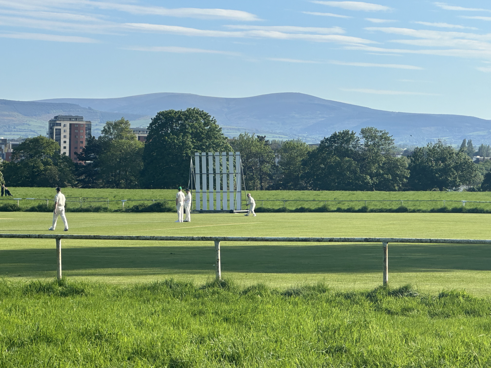
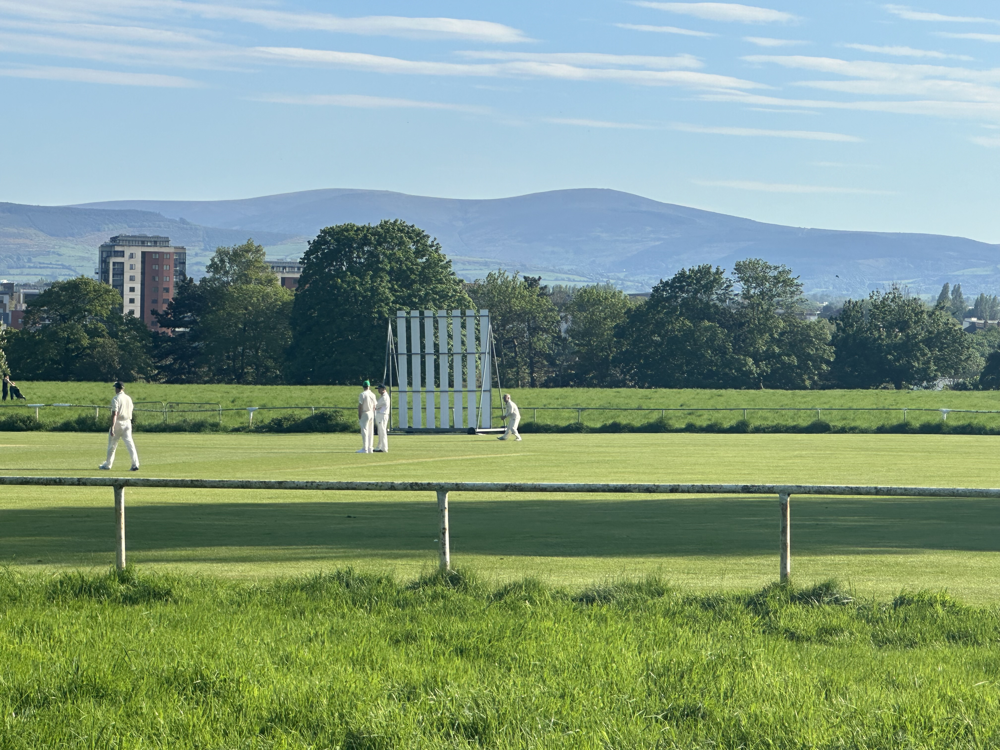

Today I was amazed at how nice the Microsoft office was. They have a gym, yoga studio, 4 kitchens, sleep room, music room, wellness room, and even doctors. It was unbelievable to see how great of an investment they put into their office - especially since COVID has left their office to half virtual. Also, they talked about AI and ChatGPT which was really enjoyable. Also, I got to play golf at Portnarmok - which was a very special treat. This course was established in 1894 and has so much history to it - including a win from Arnold Palmer.


 
